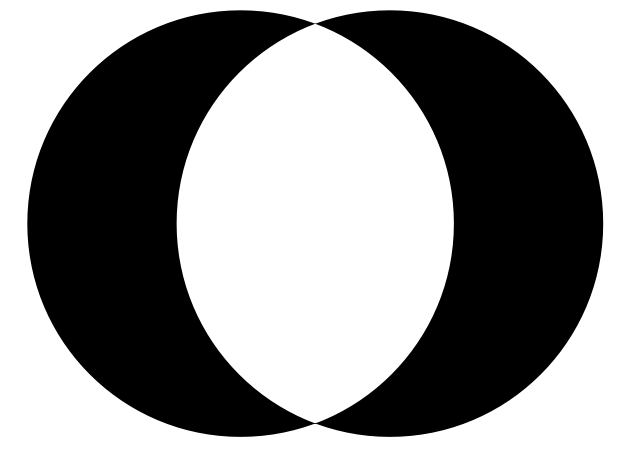
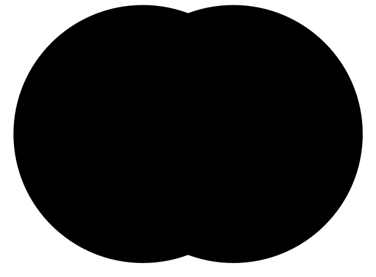
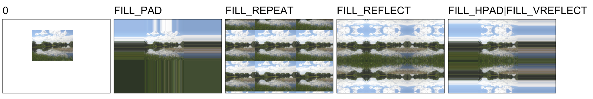
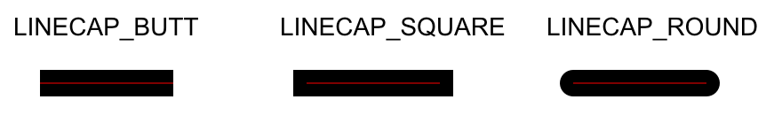
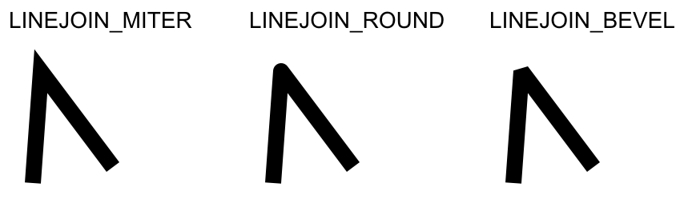
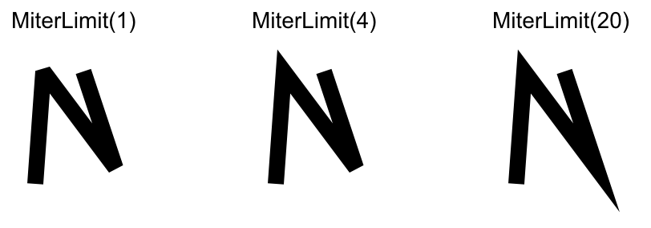
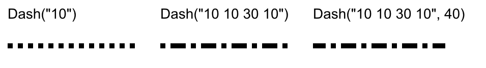

|
Painter is an abstract class that represents "SVG level" rendering engine, supporting cubic and quadratic Bezier paths, affine transformations, filling and stroking with raster images, linear or radial gradients, clipping and alpha masking.
Painter& Move(const Pointf& p, bool rel)
Painter& Move(const Pointf& p)
Painter& Move(double x, double y, bool rel)
Painter& Move(double x, double y)
Painter& RelMove(const Pointf& p)
Painter& RelMove(double x, double y)
Move to a new path point, without any visual connection to the previous path. Path definition usually starts with Move. p or x, y specify the point, if rel is true or with RelMove the position is relative to the last point of path.
Painter& Line(const Pointf& p, bool rel)
Painter& Line(const Pointf& p)
Painter& Line(double x, double y, bool rel)
Painter& Line(double x, double y)
Painter& RelLine(const Pointf& p)
Painter& RelLine(double x, double y)
Add a line to the current path from the last point of path to p / x y. If rel is true or with RelLine the position is relative to the last point of path.
Painter& Quadratic(const Pointf& p1, const Pointf& p, bool rel)
Painter& Quadratic(const Pointf& p1, const Pointf& p)
Painter& Quadratic(const Pointf& p)
Painter& Quadratic(double x, double y, bool rel)
Painter& Quadratic(double x1, double y1, double x, double y, bool rel)
Painter& Quadratic(const Pointf& p, bool rel)
Painter& Quadratic(double x1, double y1, double x, double y)
Painter& Quadratic(double x, double y)
Painter& RelQuadratic(const Pointf& p1, const Pointf& p)
Painter& RelQuadratic(double x1, double y1, double x, double y)
Painter& RelQuadratic(double x, double y)
Painter& RelQuadratic(const Pointf& p)
Adds quadratic Bezier curve to final point p / x y with control point p1 / x1 y1. If rel is true or with RelQuadratic the points are relative to the last point of path.
Painter& Cubic(const Pointf& p1, const Pointf& p2, const Pointf& p, bool rel)
Painter& Cubic(const Pointf& p2, const Pointf& p, bool rel)
Painter& Cubic(const Pointf& p1, const Pointf& p2, const Pointf& p)
Painter& Cubic(const Pointf& p2, const Pointf& p)
Painter& Cubic(double x1, double y1, double x2, double y2, double x, double y, bool rel)
Painter& Cubic(double x2, double y2, double x, double y, bool rel)
Painter& Cubic(double x1, double y1, double x2, double y2, double x, double y)
Painter& Cubic(double x2, double y2, double x, double y)
Painter& RelCubic(const Pointf& p1, const Pointf& p2, const Pointf& p)
Painter& RelCubic(const Pointf& p2, const Pointf& p)
Painter& RelCubic(double x1, double y1, double x2, double y2, double x, double y)
Painter& RelCubic(double x2, double y2, double x, double y)
Adds cubic Bezier curve to final point p / x y with control points p1 / x1 y1.and p2 / x2 y2. If rel is true or with RelCubic the points are relative to the last point of path.
Painter& Arc(const Pointf& c, const Pointf& r, double angle, double sweep, bool rel)
Painter& Arc(const Pointf& c, double rx, double ry, double angle, double sweep, bool rel)
Painter& Arc(const Pointf& c, double r, double angle, double sweep, bool rel)
Painter& Arc(double x, double y, double rx, double ry, double angle, double sweep, bool rel)
Painter& Arc(double x, double y, double r, double angle, double sweep, bool rel)
Painter& Arc(const Pointf& c, const Pointf& r, double angle, double sweep)
Painter& Arc(const Pointf& c, double rx, double ry, double angle, double sweep)
Painter& Arc(const Pointf& c, double r, double angle, double sweep)
Painter& Arc(double x, double y, double rx, double ry, double angle, double sweep)
Painter& Arc(double x, double y, double r, double angle, double sweep)
Painter& RelArc(const Pointf& c, const Pointf& r, double angle, double sweep)
Painter& RelArc(const Pointf& c, double rx, double ry, double angle, double sweep)
Painter& RelArc(const Pointf& c, double r, double angle, double sweep)
Painter& RelArc(double x, double y, double rx, double ry, double angle, double sweep)
Painter& RelArc(double x, double y, double r, double angle, double sweep)
Adds circular or elliptical arc. c / x y is the center of circle or ellipse, r is the radius of circle if it is double or horizontal and vertical radius specified as Pointf, rx ry are ellipse radii, angle is the starting angle of arc in radians where 0 is the angle of positive x axis, sweep is the ending angle of arc, positive sweep is in clockwise direction. The line is first added from the current position to the starting point of arc (if you want arc without it, just Move the position to the starting point). If rel is true or with RelArc the center is relative to the last point of path.
Painter& SvgArc(const Pointf& r, double xangle, bool large, bool sweep, const Pointf& p, bool rel)
Painter& SvgArc(double rx, double ry, double xangle, bool large, bool sweep, const Pointf& p, bool rel)
Painter& SvgArc(double rx, double ry, double xangle, bool large, bool sweep, double x, double y, bool rel)
Painter& SvgArc(const Pointf& r, double xangle, bool large, bool sweep, const Pointf& p)
Painter& SvgArc(double rx, double ry, double xangle, bool large, bool sweep, const Pointf& p)
Painter& SvgArc(double rx, double ry, double xangle, bool large, bool sweep, double x, double y)
Painter& RelSvgArc(const Pointf& r, double xangle, bool large, bool sweep, const Pointf& p)
Painter& RelSvgArc(double rx, double ry, double xangle, bool large, bool sweep, const Pointf& p)
Painter& RelSvgArc(double rx, double ry, double xangle, bool large, bool sweep, double x, double y)
Adds arc specified by SVG compatible definition. If rel is true or with RelSvgArc the center is relative to the last point of path.
Painter& Path(CParser& p)
Painter& Path(const char *path)
Adds path by parsing input text in SVG path definition format.
Painter& Character(const Pointf& p, int ch, Font fnt)
Painter& Character(double x, double y, int ch, Font fnt)
Adds character with UNICODE codepoint ch from Font fnt (font can be replaced if given character is missing in it) at the position p / x y.
Painter& Text(const Pointf& p, const wchar *text, Font fnt, int n = -1, const double *dx = 0)
Painter& Text(double x, double y, const wchar *text, Font fnt, int n = -1, const double *dx = 0)
Painter& Text(const Pointf& p, const WString& s, Font fnt, const double *dx = 0)
Painter& Text(double x, double y, const WString& s, Font fnt, const double *dx = 0)
Painter& Text(const Pointf& p, const String& s, Font fnt, const double *dx = 0)
Painter& Text(double x, double y, const String& s, Font fnt, const double *dx = 0)
Painter& Text(const Pointf& p, const char *text, Font fnt, int n = -1, const double *dx = 0)
Painter& Text(double x, double y, const char *text, Font fnt, int n = -1, const double *dx = 0)
Convenience method that renders text (using Character method) at p / x y using fnt. Number of characters can be limited to n (-1 means render all of them, advance between characters can be overriden with dx.
Painter& Rectangle(double x, double y, double cx, double cy)
Convenience method that adds a rectangle to the path.
Painter& RoundedRectangle(double x, double y, double cx, double cy, double r)
Painter& RoundedRectangle(double x, double y, double cx, double cy, double rx, double ry)
Convenience method that adds rounded rectangle to the path. r specifies the radius of circular corner, rx ry radii of elliptical corners.
Painter& Ellipse(double x, double y, double rx, double ry)
Convenience method that adds ellipse to the path.
Painter& Circle(double x, double y, double r)
Convenience method that adds circle to the path.
Painter& Div()
Divides path into groups that are treated separately with respect to current "insideness" rule (even-odd or non-zero winding rule). For example:
sw.Circle(200, 200, 100).Circle(270, 200, 100).EvenOdd().Fill(Black());

produces shape with "hole" where circles overlap, by adding Div into path
sw.Circle(200, 200, 100).Div().Circle(270, 200, 100).EvenOdd().Fill(Black());

circles are treated as separate subshapes and simply overwrite each other.
This feature is especially important when drawing text with effects as it allows individual characters to be grouped to use single fill or stroke (glyphs and advance widths are often designed with possible overlaps).
Painter& Close()
Adds line from the last point of path back to the first point (if they are not equal). Note that this is done automatically in any Fill call.
Fill is operation that affects all pixels inside the path (as defined by current insidness rule). Stroke interprets the path as "line" with thickness defined as Stroke width and affects pixels in the line. The Stroke line appearance is also affected by LineCap, LineJoin, MiterLimit and Dash attributes. The number of Stroke and Fill operations on single path is not limited.
Painter& Stroke(double width, const RGBA& color)
Painter& Fill(const RGBA& color)
Fills or strokes the path with solid color.
Painter& Fill(const Image& image, const Xform2D& transsrc = Xform2D::Identity(), dword flags = 0)
Painter& Fill(const Image& image, Pointf p1, Pointf p2, dword flags = 0)
Painter& Fill(const Image& image, double x1, double y1, double x2, double y2, dword flags = 0)
Painter& Stroke(double width, const Image& image, const Xform2D& transsrc, dword flags = 0)
Painter& Stroke(double width, const Image& image, const Pointf& p1, const Pointf& p2, dword flags = 0)
Painter& Stroke(double width, const Image& image, double x1, double y1, double x2, double y2, dword flags = 0)
Fills or strokes the path with image. The placement of image in the path is defined by transsrc transformation that maps image coordinates to current painter coordinates or alternatively by line segment p1 p2 / x1 y1 x2 y2 that represents top border of image. flags can provide FILL_FAST flag that changes image interpolation to fastest nearest-neighbor method and also provides the information about pixels outside image a combination of FILL_HPAD, FILL_HREPEAT, FILL_HREFLECT, FILL_VPAD, FILL_VREPEAT, FILL_VREFLECT, FILL_PAD, FILL_REPEAT, FILL_REFLECT, where H means extension to left/right, V up/down, PAD means repeat border pixels, REPEAT means repeat image pixels, REFLECT repeat image pixels but flip adjacent images:

Painter& Fill(const Pointf& p1, const RGBA& color1, const Pointf& p2, const RGBA& color2, int style = GRADIENT_PAD)
Painter& Fill(double x1, double y1, const RGBA& color1, double x2, double y2, const RGBA& color2, int style = GRADIENT_PAD)
Painter& Fill(const RGBA& color1, const RGBA& color2, const Xform2D& transsrc, dword flags = 0)
Painter& Stroke(double width, const Pointf& p1, const RGBA& color1, const Pointf& p2, const RGBA& color2, int style = GRADIENT_PAD)
Painter& Stroke(double width, double x1, double y1, const RGBA& color1, double x2, double y2, const RGBA& color2, int style = GRADIENT_PAD)
Painter& Stroke(double width, const RGBA& color1, const RGBA& color2, const Xform2D& transsrc, dword flags = 0)
Fills or strokes path with linear gradient. Gradient is specified by two points (p1 / x1 y1, p2 / x2 y2) and two colors color1 color2. Additional colors to be used in between can be specified with ColorStop method. style specifies the color of gradient outside of area, with options GRADIENT_PAD, GRADIENT_REPEAT, GRADIENT_REFLECT (with meaning similar to image filling options). Variant with transsrc specifies mapping using transformation matrix, with source gradient being line [0,0]-[1,0].
Painter& Fill(const Pointf& f, const RGBA& color1, const Pointf& c, double r, const RGBA& color2, int style = GRADIENT_PAD)
Painter& Fill(double fx, double fy, const RGBA& color1, double cx, double cy, double r, const RGBA& color2, int style = GRADIENT_PAD)
Painter& Fill(const Pointf& c, const RGBA& color1, double r, const RGBA& color2, int style = GRADIENT_PAD)
Painter& Fill(double x, double y, const RGBA& color1, double r, const RGBA& color2, int style = GRADIENT_PAD)
Painter& Fill(const Pointf& f, const RGBA& color1, const RGBA& color2, const Xform2D& transsrc, int style = GRADIENT_PAD)
Painter& Stroke(double width, const Pointf& f, const RGBA& color1, const Pointf& c, double r, const RGBA& color2, int style = GRADIENT_PAD)
Painter& Stroke(double width, double fx, double fy, const RGBA& color1, double x, double y, double r, const RGBA& color2, int style = GRADIENT_PAD)
Painter& Stroke(double width, const Pointf& c, const RGBA& color1, double r, const RGBA& color2, int style = GRADIENT_PAD)
Painter& Stroke(double width, double x, double y, const RGBA& color1, double r, const RGBA& color2, int style = GRADIENT_PAD)
Painter& Stroke(double width, const Pointf& f, const RGBA& color1, const RGBA& color2, const Xform2D& transsrc, int style = GRADIENT_PAD)
Fills or strokes path with radial gradient. Gradient start at focus point f / fx fy with color1 and ends at circle with center point c / x y and radius r with color2. If focus point is not present, it is the same as the center of circle. style specifies the color of gradient outside of area, with options GRADIENT_PAD, GRADIENT_REPEAT, GRADIENT_REFLECT (with meaning similar to image filling options). Variant with transsrc specifies mapping using transformation matrix, with source gradient being circle with center at [0,0] and radius 1.
Painter context and attributes
|
|
Painter has notion of two types of context: normal and path specific. Any context changes that are done without any path operations performed after latest path realization operation (Fill, Stroke, Clip) are global - valid until the context is restored to previous state with End (or painting ends). Context changes that are done after path was created are path specific - valid only for given path.
void Begin()
Stores current context on the stack. This includes clipping regions and alpha masking.
void End()
Pops and restores the context from the stack, unless the corresponding Begin was actually BeginMask.
Painter& ColorStop(double pos, const RGBA& color)
Adds additional gradient color at relative position pos. Position is fraction of distance between gradient starting and ending point as defined in Fill or Stroke.
Painter& ClearStops()
Removes all positions defined by ColorStop. As ColorStop is usually used as path specific attribute, this is really needed nor used.
Painter& Opacity(double o)
Sets painting opacity to o, where 1 is fully opaque and 0 is fully transparent.
Painter& LineCap(int linecap)
Sets line caps. linecap can be one of LINECAP_BUTT, LINECAP_SQUARE or LINECAP_ROUND (LINECAP_BUTT is default value):

Painter& LineJoin(int linejoin)
Sets the line joining mode. linejoin can be one of LINEJOIN_MITER, LINEJOIN_ROUND, LINEJOIN_BEVEL (LINEJOIN_MITER is default value):

Painter& MiterLimit(double l)
Defines a limit on the ratio of the miter length to the stroke width. Default value is 4. Past this maximum value, join reverts to bevel:

Painter& Dash(const Vector<double>& dash, double start)
Painter& Dash(const char *dash, double start = 0)
Defines the pattern of dashes and gaps used to stroke the path. First value is the length of dash. If total number of values is odd, meaning of individual values alternates between dash and gap. For const char *dash, values are defined by space separate list of numbers. start can offset the starting position.

Painter& EvenOdd(bool evenodd = true)
Sets the filling mode to either even-odd rule or zero-winding rule.
Painter& Invert(bool b = true)
Special mode where instead of filling with color or source spans, affected pixels have the color channels inverted (with binary NOT operation). This is occasionally useful for displaying cursors.
Painter& ImageFilter(int filter)
Sets the convolution filter used to rescale images. Can be one of FILTER_NEAREST, FILTER_BILINEAR, FILTER_BSPLINE, FILTER_COSTELLA, FILTER_BICUBIC_MITCHELL,
FILTER_BICUBIC_CATMULLROM, FILTER_LANCZOS3.
Painter& Transform(const Xform2D& m)
Multiplies transformation matrix by m. Cannot be used as path specific attribute change.
Painter& Translate(double x, double y)
Painter& Translate(const Pointf& p)
Translates transformation matrix by p / x y. Cannot be used as path specific attribute change.
Painter& Rotate(double a)
Rotates transformation matrix by a radians. Cannot be used as path specific attribute change.
Painter& Scale(double scalex, double scaley)
Scales the transformation by scalex, scaley factors. Cannot be used as path specific attribute change.
Painter& Scale(double scale)
Same as Scale( scale, scale).
void Clear(const RGBA& color = RGBAZero())
Sets all values in the target canvas to color. This is usually the first operation performed. Default RGBAZero() values sets canvas to be initially completely transparent.
void Paint(const Painting& p)
Replays all painting commands contained Painting object (which can be created using PaintingPainter class)
Painter& Clip()
Converts current path into clipping region and combines it with existing clipping region. This new clipping region is then valid until next End command. .
void BeginOnPath(double q, bool absolute = false)
Does takes current path, does Begin operation, then sets the current transformation so that it lies on current path at length q (if absolute is true, it is length of path, ratio of length of path otherwise (0 is the start of path, 1 end of path) and is rotated in the direction of the path. The path is extrapolated on either side by line with the last path direction to cover positions outside the path. This transformation is valid till the End command.
void BeginMask()
Starts alpha mask definition. Anything drawn since BeginMask till End command is not really drawn to the canvas and only alpha value are stored as mask that is, after the End command, combined with current alpha mask and used for alpha masking.
void EndPath()
Simply cancels the last path without drawing anything. This is occasionally useful with complex drawing code.
NilPainter : public Painter
NilPainter is special variant of Painter that simply ignores all invoked operation. It is useful in more complex code where e.g. the same routine is first used with NilPainter for calculating dimension of display output and then in second pass for actual painting.
|


{kind=link}
{kind=link}
{kind=link}
{kind=link}
{kind=link}
{kind=link}
{kind=link}